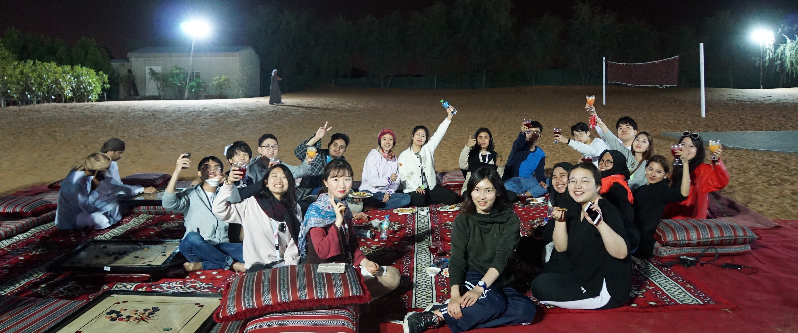

Sherilyn
Shiyin Wang
Home
Academia
Stories
Blog
Sherilyn Shiyin Wang

Asian Universities Alliance, COVID-19 Coronavirus, and Beyond
My Unpredictable Journey in the UAE
4 February, 2020
|
Please redirect to the
Medium
website.
UAE
Coronavirus
Middle East
Belt And Road Initiative
Cultural Exchange